We decided to visit Japan Town, where inner streets revealed restaurants, bars, and risque lounges. We stopped inside a dessert shop for matcha flan, and a bulletin board on the wall displayed heartwarming messages from visitors sharing what made them happy.
Sunday, September 8
Ho Chi Minh to Bali
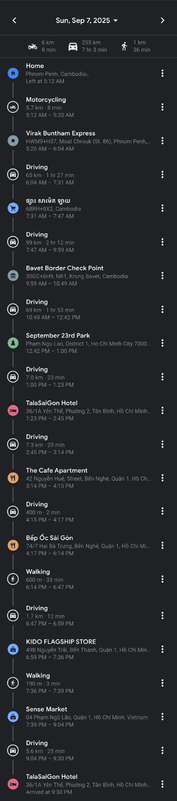
Our adventure began early in the morning with a bus journey to Ho Chi Minh City. The ride with Vireak Buntham was comfortable, and we enjoyed lunch on the bus. We later realized lunch was often skipped lunch in favor of substantial breakfasts during our busy exploration days.
We snacked on banh trang street food before heading up to explore the Cafe Apartments.
We ate two different noodles with seafood as well as Mexican dishes. The beer was good, but not draft.

We shopped at the Kido flagship store while I stood in a corner holding bags for my friends. The Sense Market was a nearby walk and we stopped for drinks and to look throught the marketplace.

Despite being just half a day, we managed to explore numerous places and soak in the energy of this bustling city.
Tanah Lot
Monday, September 9
The ride from the airport to Tanah Lot took an 4 hours due to heavy rain and traffic through the popular Canggu beach area. We didn't know then but it would begin the hardest rainfall of the year yet.
Despite the challenging weather, we made it to dinner at a beachside restaurant where Mary's pasta arrived quite small on an impressively large plate. I tried satay, which became one of my favorites. The restaurant closed at 8 PM, giving us just enough time to capture some photos by the water, looking down the dramatic cliff face.
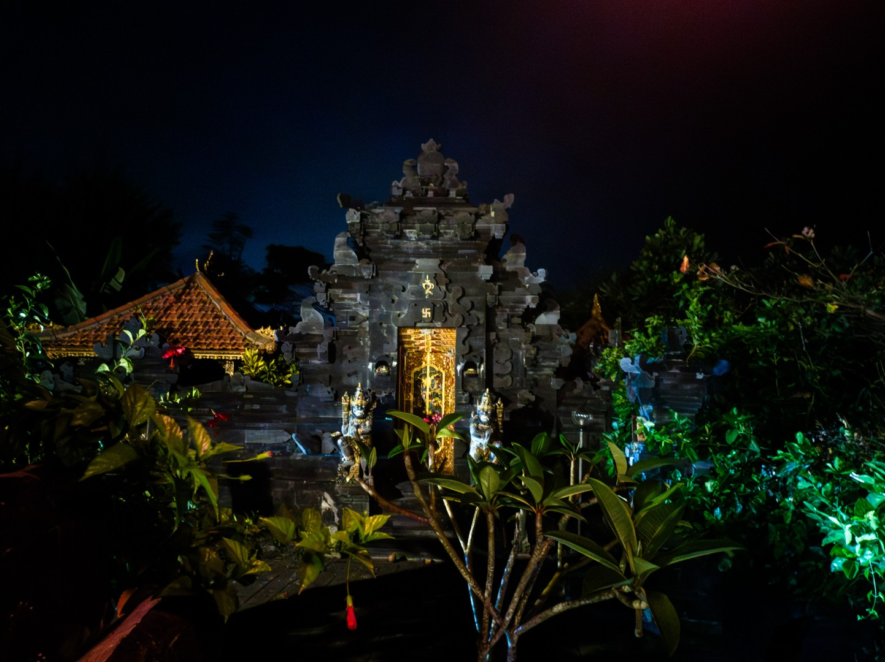
Back at our hotel, we had an inspiring conversation with the hotel owner who shared incredible photos from his hiking adventures with drone footage of volcanoes, dangerous ridges, forests, and waterfalls. We spent time discussing outdoor activities and temples.
Tanah Lot Temple & Coffee Plantation
Tuesday, September 10
We started early at Tanah Lot temple despite the drizzling weather. After breakfast near the water with our driver Bli (meaning "bro" in Balinese), we walked to the cove where we could see a small peninsula with a temple. We couldn't enter as it's reserved for worship, so we made our way to the main temple on the offshore islet. The rain had subsided, and the waves crashing against the rocks created a dramatic and picturesque scene.
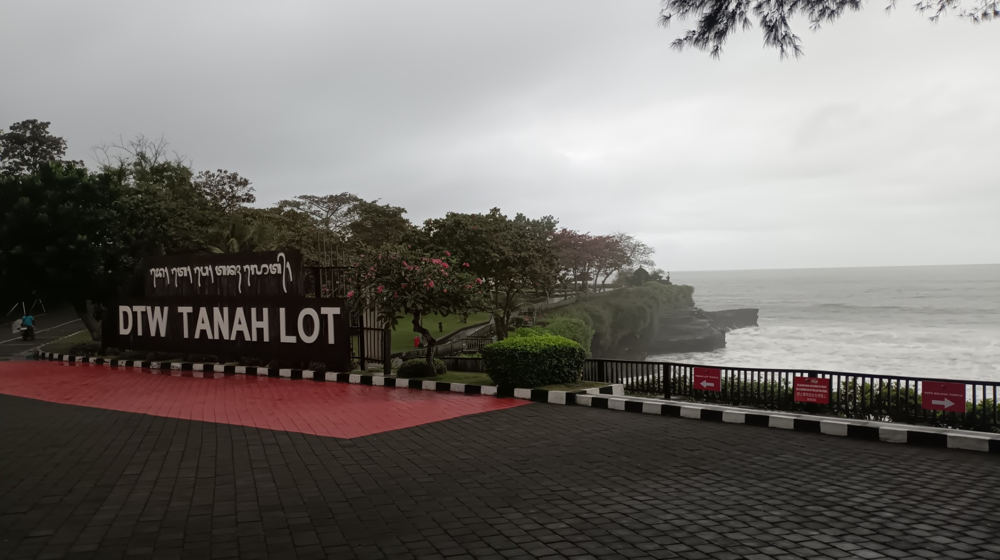
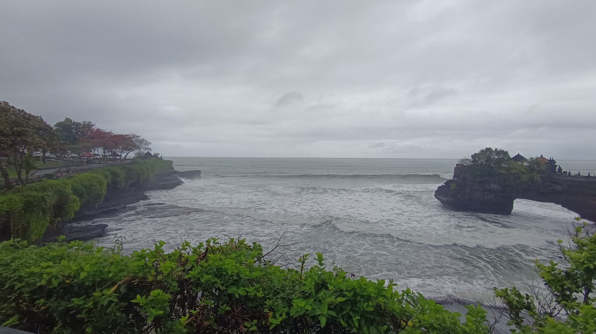
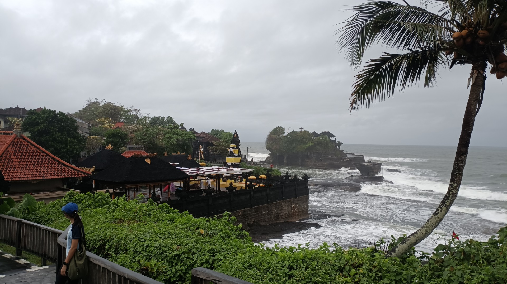
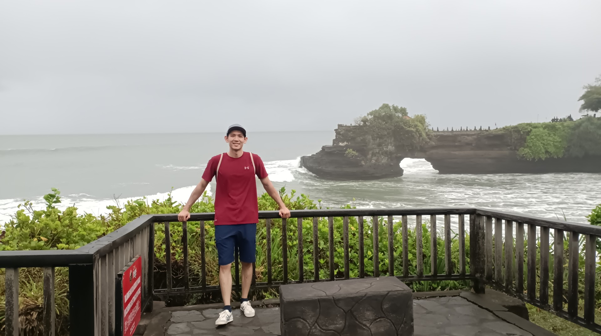
Our next stop was a coffee and tea stop where we experienced an incredible platter of 16 different varieties:
Coffee Varieties:
- Ginseng Coffee
- Coconut Coffee
- Vanilla Coffee
- Pure Coco
- Chocolate Coffee
- Avocado Coffee
- Bali Coffee
Tea Varieties:
- Ginseng Tea
- Red Rice Tea
- Lemongrass Tea
- Mangosteen Tea
- Ginger Tea
- Red Ginger Tea
- Roselle Tea
- Pandan Tea
- Turmeric Tea
The coffee center was surrounded by lush green rice fields with an "I Love Coffee" sign, and they sold local sugarcane 35% rum. We also encountered a few sleepy luwaks in a cage.


We continued to Taman Ayun temple on our way to Ubud, where we explored the beautiful garden temple within the moat. In the center were buildings with black-thatch roofs and we climbed the meru tower. Across the street, we discovered a private garden temple with a river running through it.
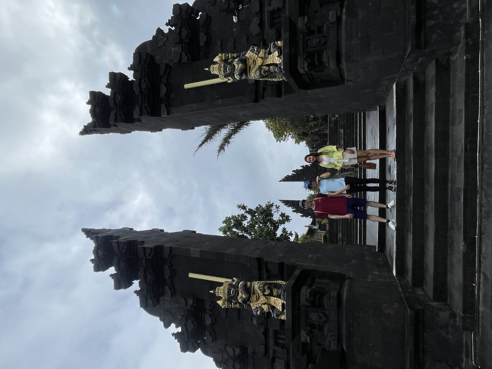
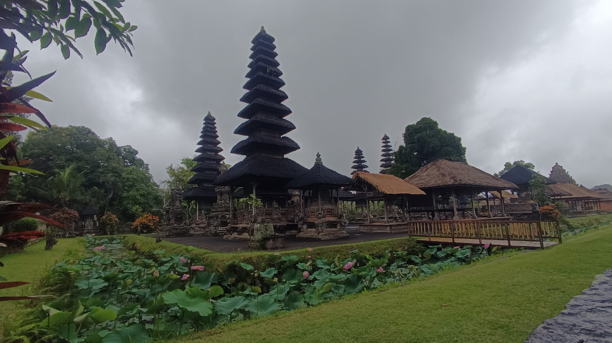
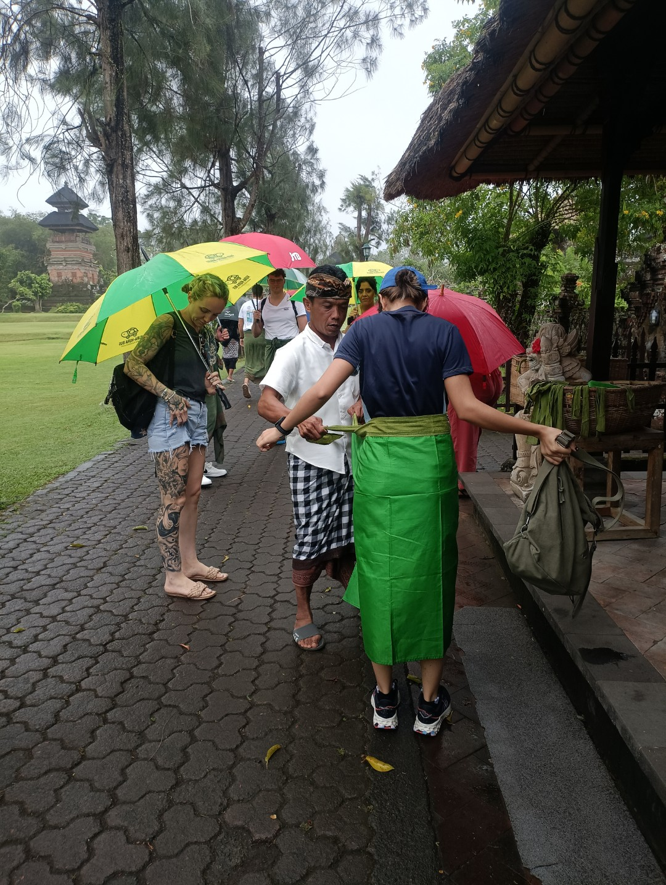


As it was nearly 3 PM and our next destination was Ubud, we stopped at a restaurant our driver recommended. It began to rain harder as we arrived, so we decided to take the rest of the day to relax and restore. That night brought the hardest rainfall of the year, and we later learned there were casualties and flooded cities from this unexpected downpour.
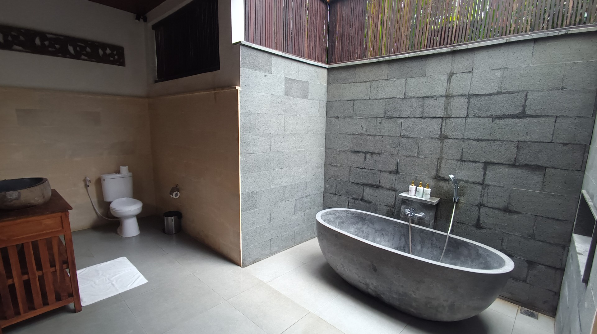
Ubud Adventures - Monkeys, Markets & Holy Springs
Wednesday, September 11
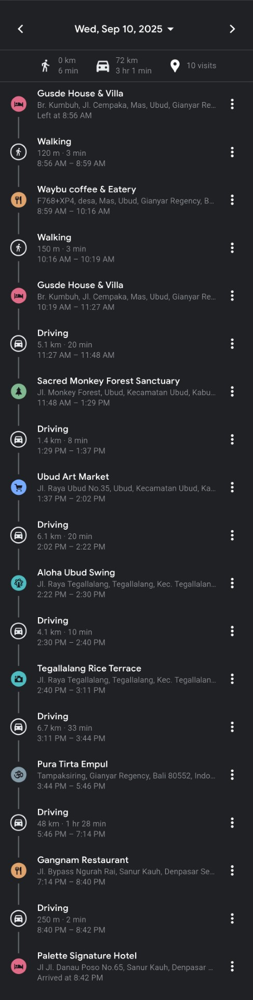
We started the morning with a hearty breakfast at a nearby eatery. On our way back, we noticed a sign indicating rice fields just 50 meters away, so we followed a charming cobblestone path through greenery to discover an enclosed area with a small paddy and surrounding accommodations.
Back at our hotel villa, a staff member named Wayan helped me send back a key I had forgotten at Tanah Lot. He offered to be our personal driver for the day, and we gladly accepted.
Sacred Monkey Forest Adventure


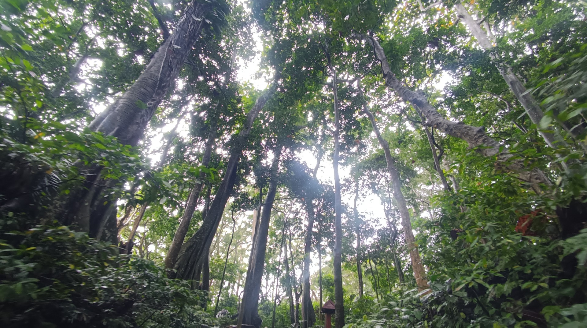
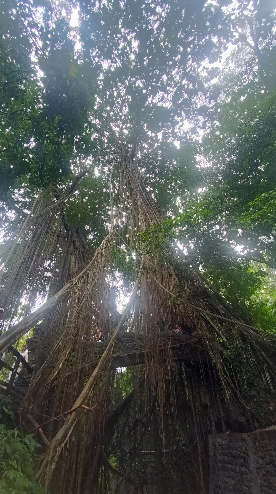

Our first stop was the Sacred Monkey Forest, the closest attraction to our location. Despite Mary's honest reluctance due to the unpredictability of monkeys and their mischievous antics, we were able to see beautiful greenery and peaceful forest paths with massive ficus trees throughout. A river ran through the center, and several feeding stations attracted groups of monkeys.
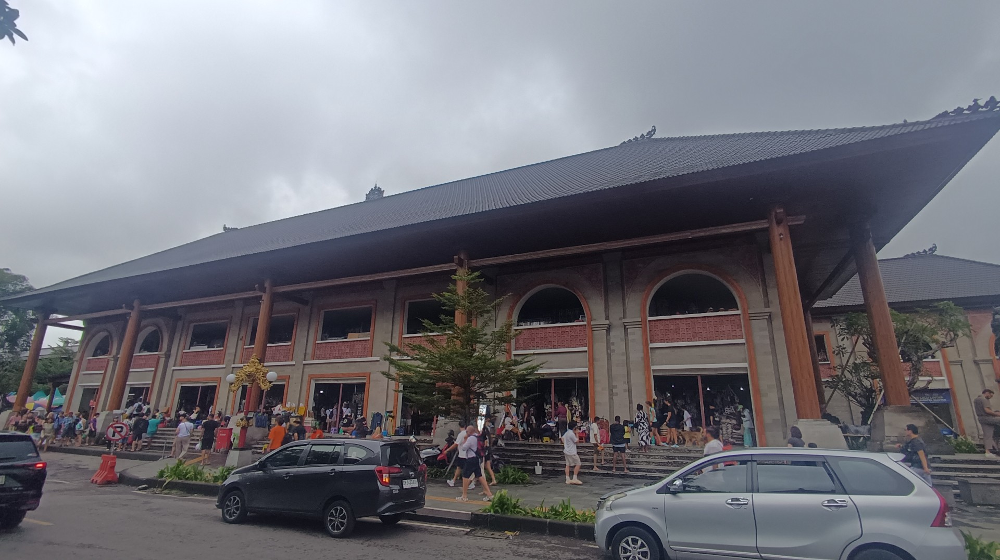
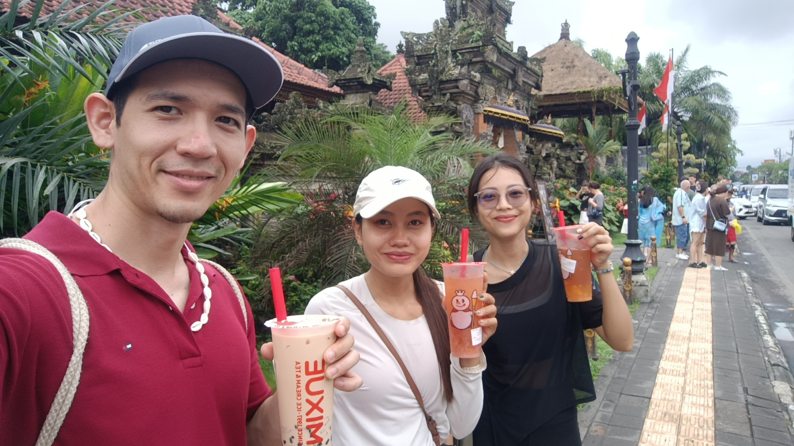
We made a quick stop at the art market, exploring the first floor. Though Wayan warned us about the high prices, I felt proud haggling a shell necklace from 100k to 70k, only to later discover they are common for 20k or less.
Rice Terraces & Swing Adventure

After some refreshing tea at Mixue, we headed to the famous Ubud swing. However, with rain falling and none of us wanting to wait in line for photos or pay to go down to the waiting area, we decided to visit the UNESCO World Heritage site of Tegallalang rice terraces. The views were absolutely spectacular, with people ziplining across the terraces.
Tirta Empul Holy Springs


Still raining, we made our way to Tirta Empul temple before closing time. We wore sarongs to enter, and Sophorn donned a special green sarong to participate in the holy spring bathing ritual. After giving offerings at the altar, participants enter the pool and begin at the leftmost fountain, splashing water on their face three times, then placing their hands on the stone wall with their head under the fountain before moving right to repeat the process at each water spout. Whether by divine blessing or fortunate coincidence, there was no rain in the following days.
We traveled to Sanur beach without incident, miraculously dodging all flooded areas, and enjoyed dinner at an excellent Korean restaurant together with Wayan, who proved to be wonderful company throughout the day. Sophorn, familiar with Indonesian culture, called him 'Pak', a warm and respectful way to create a sense of community and closeness like family.
Nusa Penida Island Adventure
Thursday, September 12
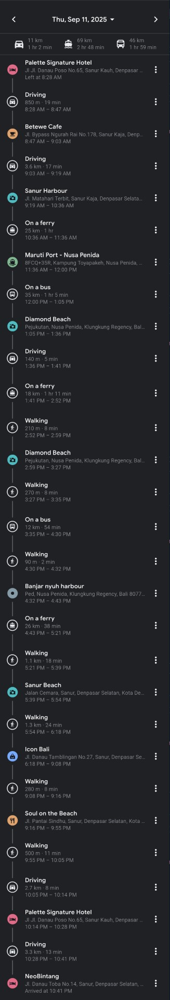
We planned an exciting day trip to the nearest island, Nusa Penida. After grabbing takeaway meals and booking a round-trip speedboat at the harbor, we cruised under clear skies and calm waters.
Diamond Beach - Crystal Waters Paradise
The journey to Diamond Beach on the east coast had steep and twisting roads and we held on with only trust in the expert Balinese drivers and a prayer. The views from the cliffs were spectacular, overlooking the Indian Ocean. Our driver surprised us by being an excellent cinematographer, helping capture photos and videos with smooth fade transitions.
Kelingking Beach - The T-Rex Cliff
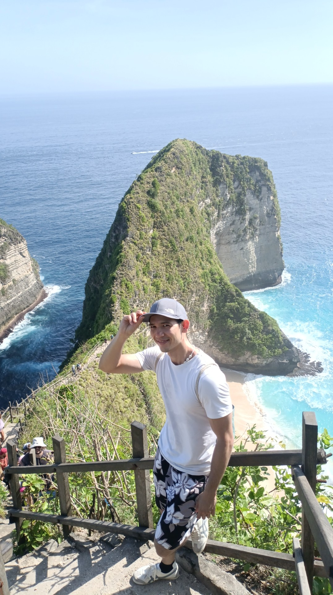
We continued to the southwestern Kelingking Beach with more impressive ocean views from the stairway cut from the side of a cliff.
During our island exploration, we visited a local sea turtle rescue center where people could donate to adopt the release of a little one when they are ready.
Icon Mall & Evening Delights
After making it back to catch our return ferry, we walked along the beach to settle our nausea from the ride and found a nice Chinese restaurant in the Icon Beach Mall. Following dinner, we enjoyed drinks at a quiet beachside restaurant where Sophorn tried a piña colada for the first time, only to be greatly disappointed by the oily texture created by the combination of coconut liquor and coconut cream.
A quiet moment on the beach in paradise stopped time and everything was perfect.
Sanur Sunrise & Uluwatu Temples
Friday, September 13
I woke up at 6 AM, ready to witness the sunrise from the eastern beaches of Sanur. The scene was quiet and scenic from a small rocky pier overlooking the beach.
Tanah Barak Cliffs - Limestone Majesty
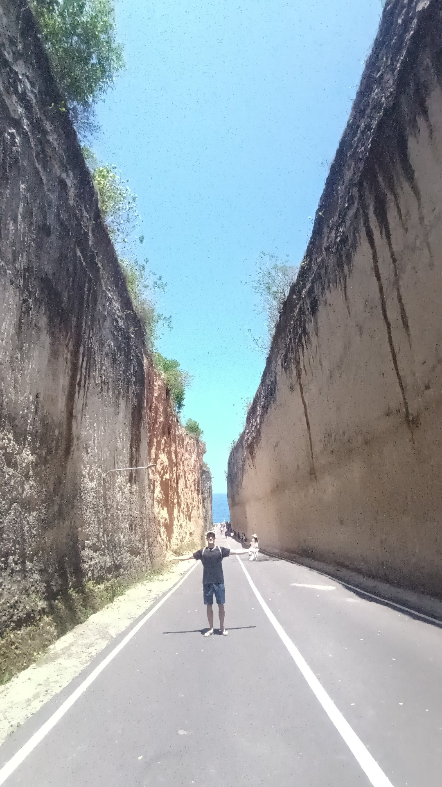
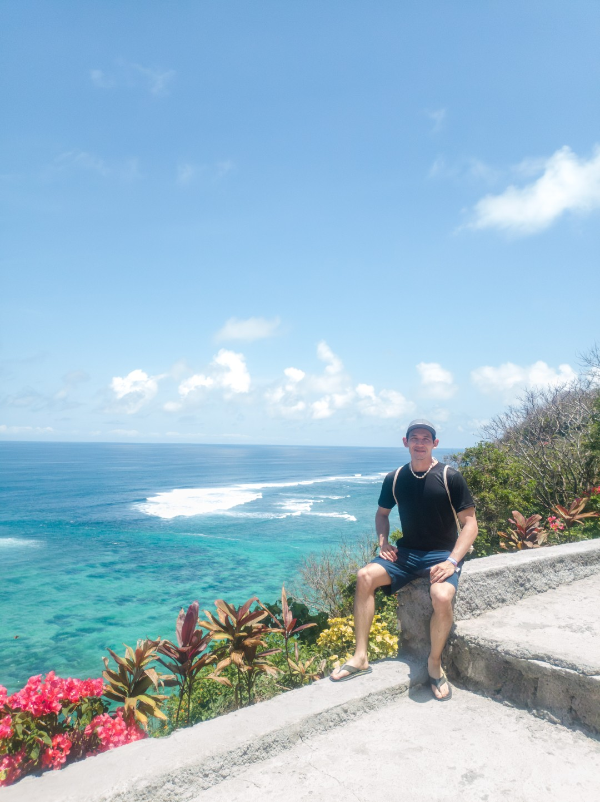
Our first destination was Tanah Barak cliff, where we took a shuttle to view two massive limestone formations that had been cut through by humans to provide access to the beach below. The ocean views were breathtaking and many paragliders soared overhead.
Padang Padang Beach - Hidden Paradise
Just 4 kilometers away, we visited Padang Padang Beach for a quick dip before heading to the airport. Stairs led down through a narrow crevice in the limestone cliff to the beach below. The beach's edge featured fascinating cave-like rock formations with tunnels, while granite boulders were scattered across the sand.
Uluwatu Temple - Clifftop Spirituality
That evening, we flew to Jakarta. After a 30-minute wait for a Gojek airport taxi, we went to a recommended Indonesian restaurant. With few English speakers in the city and dishes we did not prefer, we ended up having late-night congee at a Chinese food spot instead.
Jakarta Exploration
Saturday, September 14
Jakarta proved to be a fascinating big city where taxis are surprisingly affordable and many use electric vehicles. Sophorn and Mary stayed at the Novotel, and we discovered a charming coffee shop within walking distance. Despite its small entrance, the interior was spacious and artsy, featuring several sections with unique decor that created an inspiring atmosphere.
Grand Indonesia Mall Adventure
We spent time walking down the street, browsing local handicrafts and exploring the massive east and west wings of the Grand Indonesia mall. I thoroughly enjoyed navigating the 6-floor, multi-tower complex, where we purchased souvenirs and sampled food from various shops.
Our original plan was to visit the mangroves at PIK for sunset, but Jakarta's rush hour traffic proved too challenging. Instead, we decided to relax at the 5th floor open pool area at the Novotel.
Journey Home
Sunday, September 15
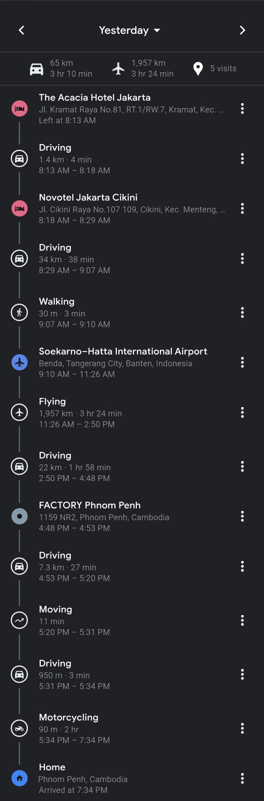
Sunday morning marked our return journey, arriving at the newly opened Techo International Airport in Phnom Penh. At only one-third of its planned completion size, the airport is already much larger than Pochentong with modern technology like electronic scanning that makes processing quick.
New Airport Experience
Traffic was heavy as many people came to see the new complex. We were happy to be back home in Cambodia after an amazing week-long experience that had taken us through bustling cities, ancient temples, pristine beaches, and unforgettable cultural encounters.
This journey through Vietnam, Indonesia, and back to Cambodia had been filled with adventure, new experiences, and many lasting memories. The island nation is so diverse and I got new perspectives from different people in different cultures, as well as picked up skills about processing photography. From the sacred springs of Tirta Empul to the dramatic cliffs of Nusa Penida, every moment contributed to an incredible tapestry of experiences that reminded us why we travel - to discover not just new places, but viewpoints on life itself.